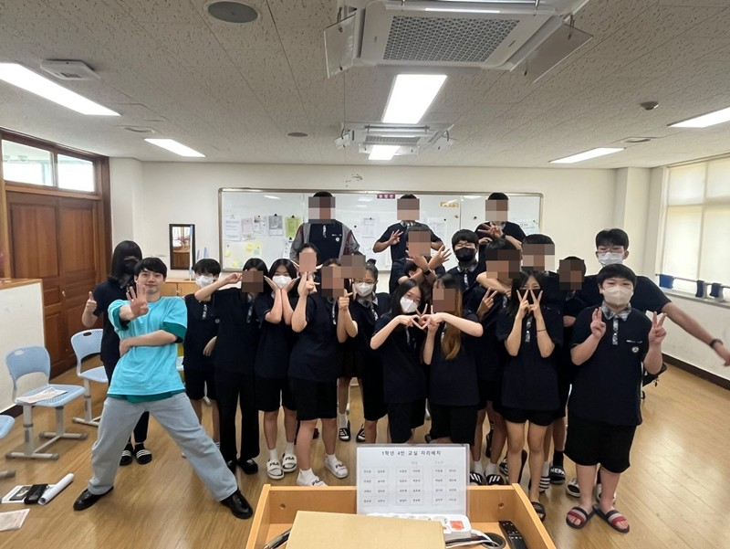

한양대학교 연극영화학과 연기전공 합격 (실기,면접) (120:1) '16
중앙대학교 연극학과 연기전공 합격 (실기,면접) (130:1) '16
용인대학교 연극학과 연기전공 합격 (실기,면접) (110:1) '16
한양대학교 영화 제작 실습 (PT) : '첫걸음', '빨래', '악순환', '사람들', '여생' '16~'19
한양대학교 실전 창업 A to Z 학점 A (PT) : 18
계원예술고등학교 연극영화과 합격 (실기,면접) (5:1) '12
계원예술고등학교 연극영화과 연기전공 입시 진행 : 200명 앞 입시 설명 및 질의응답 '12~'13
계원예술고등학교 연극영화과 과대표 '13
창일중학교 임원 당선 '11 / 창일초등학교 임원 당선 '08~'09
계원예술고등학교 축제 MC '14
싱어송라이터 '다흰' 콘서트 MC '19
기업 출강 : **에이전시 '24~
학교 출강 : 오송중, 문막중, 대천여중, 홍천여중, 옥천중, 양주청소년수련원 (하부르타 지능 교육회 진로 체험 강의 강사) '23~
학원 출강 : Kaat 산 ' 23~
도봉문화재단 존중문화도시도봉 주민기획 100단 200만원 지원 사업 최종 당선 및 진행 (PT) '21
모두예술극장 극장 에티켓 등 전체 나레이션 주관 '23
Kaat 산 연기학원 안톤체홉&갈매기 분석 특강 '21
[ Movie ]
2021 장편 ‘연애 빠진 로맨스’ <단역>
2021 장편 ‘좀비크러쉬 : 헤이리’ <조연> (24회 부천 국제 판타스틱영화제 코리안 판타스틱 : 장편 감독상, 장편 배우상 심사위원 특별언급, 장편 배급지원상)
2020 단편 ‘수미’ <조연>
2019 단편 ‘여생’ <주연> / 단편 ‘저 너머에서’ <조연>
2018 단편 ‘사람들’ <조연>
2017 단편 ‘채식주의자’ <주연>
2017 장편 ‘분장’ <단역> (42회 서울독립영화제 새로운선택상)
2016 단편 ‘쿵’ <주연> / 단편 ‘180도’ <주연> 외 다수
[ Play ]
2023 크리미널 시즌4 <주연>
2020 행쇼 <주연> 외 다수
[ Musical ]
2023 아이캔플라이 <주연>
2022 안녕 <연출>
2021 쇼미더스쿨 <주연> / 스테이지액터 <주연>
2020 억수로 좋은날 <조연> / 로미오와 줄리엣 <조연> 외 다수